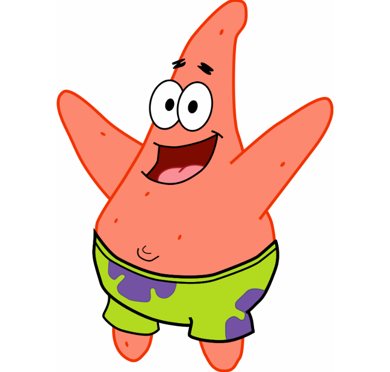

8 PM, Summer
Note
Scroll Animation!
Related work :
Hover animation version
3 PM, Winter
10 AM, Summer Storm
5 PM, Autumn
7 PM, Spring
6:30 AM, Summer
6 PM, Autumn
5 PM, Summer
11 AM, Summer
2 PM, Spring Rainbow
4 PM, Autumn